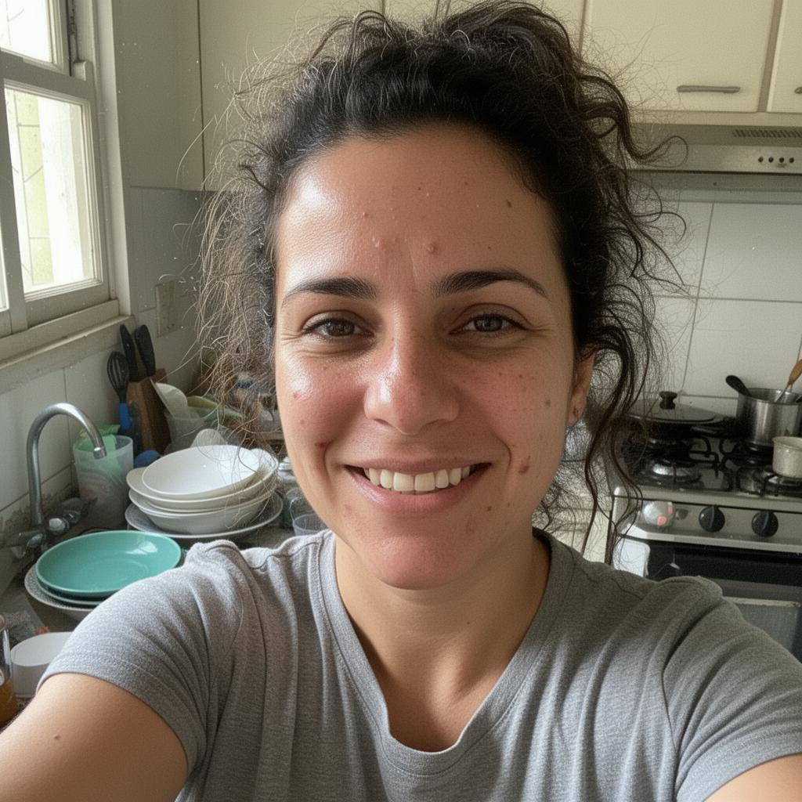
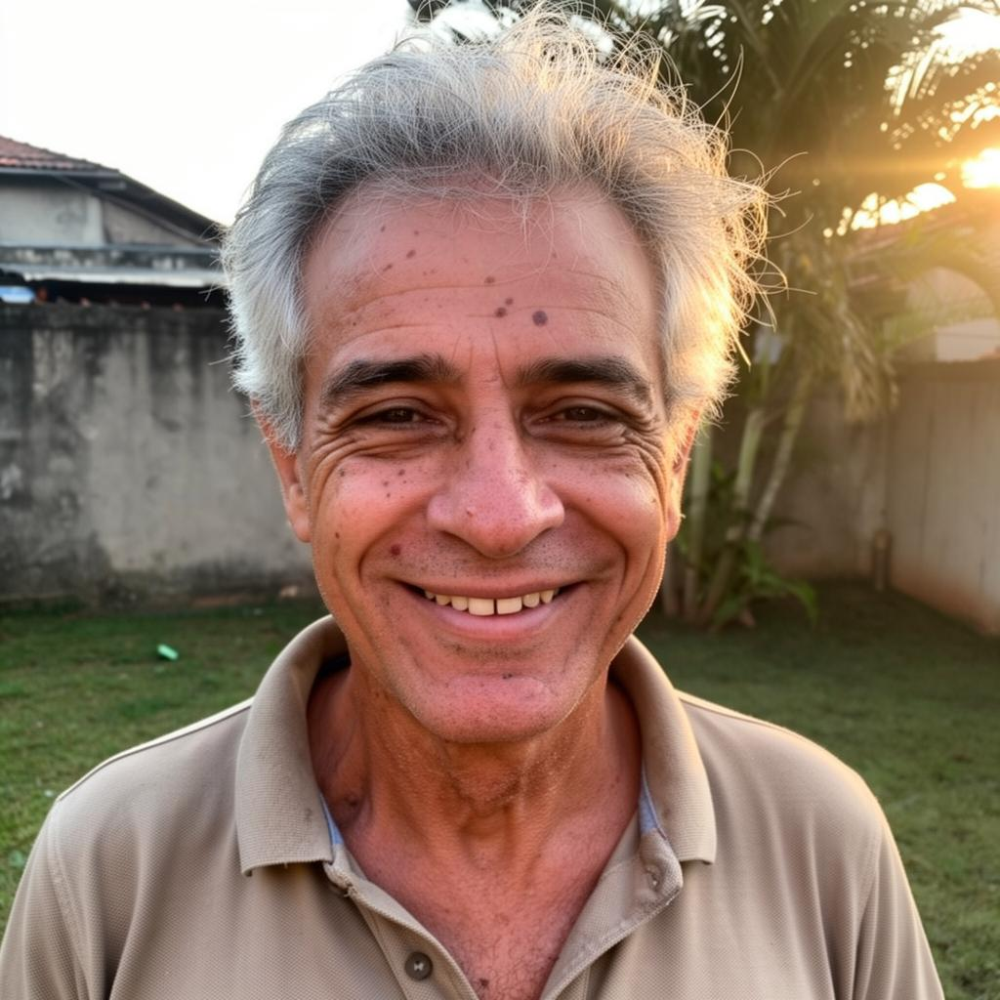

Cada lição faz a criança descobrir a verdade sozinha, criando conexões profundas e duradouras.

A série digital criada por apologistas, teólogos e psicólogos infantis para ensinar crianças de 8 a 14 anos a PENSAR a fé — não apenas repetir histórias bíblicas.
Quero garantir o acesso com desconto →

Aqui, seu filho não aprende apenas o que acreditar, mas por que acreditar.
Quero garantir o acesso →Simples, prático e direto ao ponto.
Seu filho aprende no ritmo dele, com lições curtas e objetivas.
As perguntas do material geram diálogos profundos em casa.
Ele aprende a avaliar ideias, dúvidas e questionamentos.
A fé deixa de ser abstrata e passa a fazer sentido.
52 semanas de teologia sistemática para crianças.
Como lidar com perguntas difíceis sobre fé sem pânico, respostas prontas ou conflitos — transformando dúvidas em conversas construtivas.
Valor R$47 · Grátis
Atitudes comuns, porém prejudiciais, que muitos pais cometem sem perceber — e como ajustá-las para proteger o desenvolvimento da fé.
Valor R$47 · GrátisComo apoiar seus filhos nas mudanças cognitivas e emocionais da adolescência final, sem controle excessivo, medo ou pressão.
Valor R$47 · Grátisde R$74,00 por:
de R$147,00 por:
Você tem 90 dias para testar a metodologia. Se por algum motivo perceber que não é para você, devolvemos integralmente o seu investimento, sem questionamentos.
Leia os depoimentos de quem já tomou a decisão certa.
Meu filho sempre fez perguntas difíceis e eu ficava sem saber o que responder. Esse material não me deu respostas prontas — me ensinou a conversar melhor com meu filho. Hoje ele consegue explicar por que acredita.
Ana Paula R.Mãe de um menino de 9 anosPercebi que estava ensinando meu filho a repetir frases, não a pensar. A jornada me ajudou a corrigir isso. Vi meu filho ficando mais confiante para falar da fé sem ficar defensivo.
Ricardo M.Pai de um menino de 11 anosSempre tive medo das dúvidas da minha filha. Achava que ela estava se afastando. Hoje entendo que as perguntas fazem parte do crescimento. O material trouxe mais calma e profundidade.
Juliana S.Mãe soloO que muda tudo é prepará-lo para o que acontece fora dela.
Quero minha vaga agora →